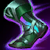
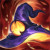

TUDO SOBRE O TWITCH
Seja bem vindo, continue para aprender mais sobre o campeão do lol twitch
Introdução ao Campeão
O twitch é um campeão que geralmente é encontrado na rota de adc, entretanto, podemos encontra-lo também nas rotas do meio e de suporte.
Itemização
- Build AP
- Dente de nashor

- Botas de Feiticeiro
 - Coroa da Rainha

- Rabadon
 - Zhonyas

- Build AD